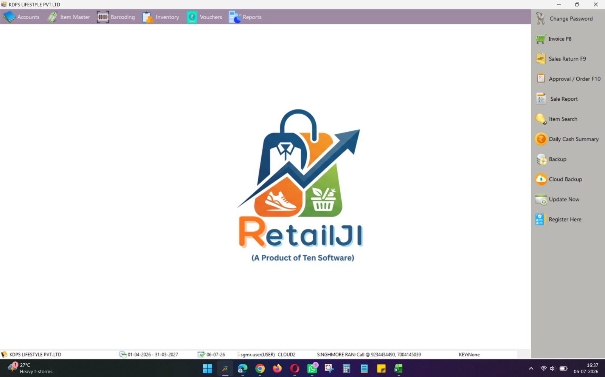
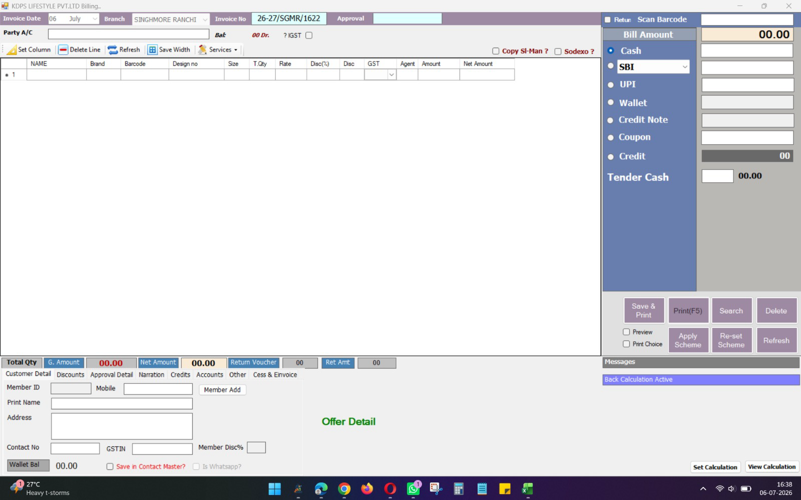
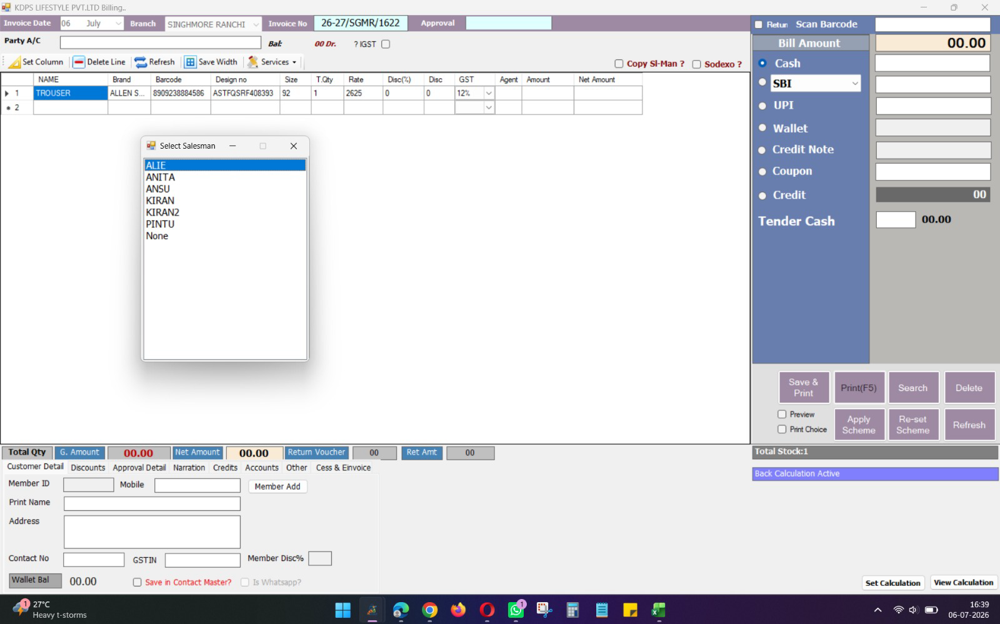
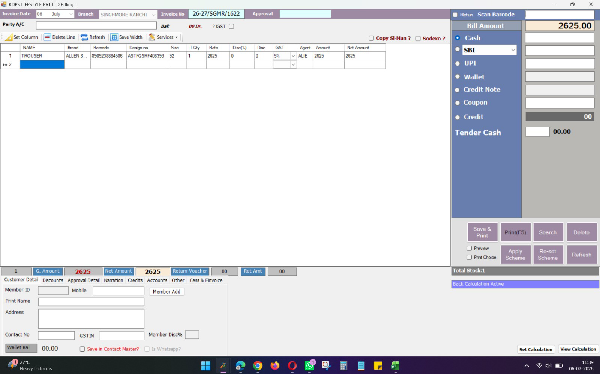

The KDPS POS — store-login requirements
What the store-facing POS must do, gathered before any screen is designed. Sources: the two handwritten store notes (30 June and 25 July), the store-visit interviews of 26 May, four screenshots of the billing software the stores use today (RetailJI, taken at Singhmore Ranchi), and every decision the design corpus has already locked about selling. Scope: the store login only. Head-office screens, masters, Tally and analytics are out of this document.
1 · The rule that shapes everything: keep the shape
Client requirement (29 July 2026, and said before at the 26 May store visit): the new POS should look and drive like the one the staff already use, so the current users adapt with near-zero retraining. Same layout, same scan-first rhythm, same keyboard habits. We change the engine, not the face.
Concretely this means the new Sell screen keeps:
- The scan box top-right, always focused; scan → line appears → cursor returns to the scan box.
- The line grid in the middle with the same columns staff read today: item name, brand, barcode, design no., size, qty, rate, discount % and amount, GST, salesman, amount, net amount.
- The payment panel on the right: bill amount at top, one row per payment mode, tendered cash and change at the bottom.
- The customer strip at the bottom: member/mobile, name, address.
- The big action buttons (Save & Print, Print, Search) and the F-key habits (F5 print, F8 new invoice, F9 sales return) where they make sense.
Keeping the shape does not mean keeping the junk. Dead controls (the never-used Coupon tile, Sodexo, Backup buttons, the column-width fiddling toolbar) go, and the known bugs get fixed underneath (section 5). The stores should feel "same screen, but it never hangs", not "new software to learn".
2 · The current screen, read closely




What the screenshots establish, region by region:
| Region today | What it does | In the new POS |
|---|---|---|
| Header: date, branch, invoice no. 26-27/SGMR/1622, approval box | Branch is fixed to the store. Invoice number is financial-year / store code / running serial. | Keep. Numbering already matches our rule: per-store, gap-free, never reused. |
| Scan box + Return tick | Scan-first entry; ticking "Return" makes the next scans return lines in the same bill. | Keep the gesture; returns become proper documents underneath (section 3D). |
| Line grid incl. Agent column | Item resolves from the master on scan; a salesman is chosen per line via popup; GST slab sits per line; stock under the barcode shows immediately. | Keep. GST comes from our date-effective slab master; stock from the store's own cached data. |
| Payment panel: Cash, Card (bank), UPI, Wallet, Credit Note, Coupon, Credit, Tender Cash | Amount boxes per mode — the current POS already does split payment across modes on one bill. | Keep Cash / Card / UPI / Credit Note; Coupon is unused noise; Wallet and Credit need a decision (section 4). |
| Customer strip: Member ID, mobile, name, address, GSTIN, member disc %, wallet balance, "is WhatsApp" | The bill can carry a customer; membership gives a discount % and a points wallet. | Keep name + mobile capture; membership/wallet is a decision (section 4). |
| Offer Detail + Apply Scheme / Re-set Scheme | Schemes are applied to the bill on demand and shown in a detail area. | Replaced by the offer engine: rules arrive from HO, apply themselves as items scan (section 3B). |
| Totals strip: total qty, gross, net, return voucher no. + return amount | A return in the same bill nets off against the new items. | Keep — this is the exchange flow the design already locks. |
| Home rail: Sale Report, Item Search, Daily Cash Summary | The store's own day: today's sales, item lookup, cash summary. | Keep all three; they map to screens the stores asked for by name. |
| "Back Calculation Active" | Price is MRP, inclusive of tax; base and GST are worked backwards from it. | Keep. MRP-inclusive is the law and already our locked pricing rule. |
| Backup / Cloud Backup / Update Now / Register | Desktop-app housekeeping. | Drop — the platform handles this; stores never see it. |
The happy surprise in these screenshots: the current POS already does three things our design wants — a salesman recorded on every sale, split payment across modes, and MRP-inclusive back-calculation. Keeping the shape and keeping the rules point the same way.
3 · The requirements
Each item is tagged: Locked the design corpus already decided it · Stores asked it comes from the store notes or interviews · Keep-shape it exists in the current POS and stays because of the continuity rule · Decision genuinely open, listed again in section 4.
A · Billing — the Sell screen
| # | Requirement | Tag |
|---|---|---|
| A1 | Scan-first billing. Cursor lives in the scan box; scan resolves the item from the store's own cached data — no internet round-trip per scan. After qty + Enter the cursor returns to the scan box by itself. | Stores asked Keep-shape |
| A2 | Barcode is a scan-alias, not the identity. One live batch under the barcode → straight through. Several → oldest season first. Genuinely ambiguous → one-tap "which season?" that never blocks the sale. | Locked |
| A3 | Stock under the barcode shows at scan time (the current "Total Stock" readout), from local data. | Keep-shape |
| A4 | Every line records who sold it. The current per-line salesman popup stays. This field is the foundation for the member-wise reports and staff targets the stores asked for. (Per line vs per bill: see decision D-1.) | Locked Stores asked |
| A5 | Price is the printed MRP, inclusive of tax. GST is worked backwards from it using the dated slab for that item's HSN and price band (data, not code). The bill carries the full GST breakup; nothing downstream recomputes it. | Locked |
| A6 | The bill snapshots everything at the moment of billing — price, slab, offer. Editing a master later never changes an old bill. | Locked |
| A7 | No editing a saved bill, ever. Reprint only; a mistake is corrected by a new reversing document that references the original. The stores wrote this rule themselves ("can re-print only"). | Locked Stores asked |
| A8 | Bill numbers are per-store, gap-free, never reused — including offline. One POS per store is a hard invariant, so store + bill number is always unique. | Locked |
| A9 | Selling an SOR/consignment piece posts the brand's money at the till. Invisible to the cashier, but the sale is the document that writes the vendor liability — the POS must know each item's ownership. | Locked |
| A10 | Auto-inward on scan. A piece that has arrived but is not yet formally inwarded can be inwarded and billed in one scan — the sale is never blocked and no negative-stock gap is left. | Locked |
B · Discounts and offers
| # | Requirement | Tag |
|---|---|---|
| B1 | Offers apply themselves. HO pushes the live rulebook to the till; as items scan, the right offer lands per item (best brand offer + stackable store-wide/bank add-ons). No cashier typing a % from memory. The owner's words: rule set by HO, counter staff just chooses. | Locked Stores asked |
| B2 | Manual discount is capped per role. Below the cap the cashier may apply it; above the cap the bill will not close without a manager's OK, recorded on the bill. | Locked |
| B3 | Every discounted line records the evidence: MRP, discount, final price, which rule fired, who billed, who approved, who funds it. Feeds the daily applied-vs-rulebook check. | Locked |
| B4 | No-discount styles are skipped automatically. | Locked |
C · Payment
| # | Requirement | Tag |
|---|---|---|
| C1 | Modes: Cash, Card, UPI — the three real rails. Counter credit notes are retired by POS counter redesign grill Q3/Q3b; Coupon and Sodexo remain dropped as unused. | Locked |
| C2 | Split payment on one bill — amounts across several modes, exactly as the current panel works. (The design corpus never confirmed this; the screenshots settle that stores have it today. See decision D-2 to ratify.) | Keep-shape Decision |
| C3 | Tendered-cash and change at the bottom of the panel, as today. | Keep-shape |
| C4 | Credit (udhaar) stays a tag, not a ledger — the conscious omission stands until receivables are designed. The bill can record "on credit", nothing chases it yet. | Locked |
| C5 | Per-bill payment totals feed the daily 3-way collection audit (POS ↔ settlement report ↔ bank) that D4 designed. The store confirms its own day; HO works the exceptions. | Locked |
D · Returns and exchange
| # | Requirement | Tag |
|---|---|---|
| D1 | Exchange in one bill: return legs + new items, linked to the original bill and reason-coded. Outgoing pieces must be worth at least the returned paid value; Save & Print refuses anything short. | Locked |
| D2 | Returned value is what the customer actually paid for the piece, never its MRP; the new piece charges at today's live price and offer. | Locked |
| D3 | A returned piece goes back to shelf if good, to quarantine if damaged, feeding the defective flow. | Locked |
| D4 | No return without an equal-or-higher new purchase. No cash/card/UPI refund and no credit note: money that entered KDPS never leaves. Superseded and closed by POS counter redesign grill Q3/Q3b (2 Aug 2026). | Locked |
E · Reprint and customer search
| # | Requirement | Tag |
|---|---|---|
| E1 | Find a past bill by name, phone number, or bill number; it opens read-only in the sell screen. | Stores asked |
| E2 | Reprint only. No edit path exists from a found bill. | Locked Stores asked |
| E3 | Capture customer name + mobile on the bill (as today). Whether this grows into membership and a points wallet is decision D-3. | Keep-shape Decision |
F · Billing never stops (the offline rule)
"Net chale ya na chale, billing nahi ruke." The single loudest store complaint: today's POS is fully cloud-dependent — no internet, no billing — and retries under a slow network have double-billed customers. This is the number-one engineering requirement of the whole slice.
| # | Requirement | Tag |
|---|---|---|
| F1 | The till bills entirely offline: local item/price/offer/stock data, local bill numbering, a durable local queue that syncs when the connection returns. | Locked Stores asked |
| F2 | A retry can never double-bill. Every sale carries a terminal-generated unique ID; the server accepts it once and returns the same bill on any repeat. | Locked |
| F3 | Paper fallback with a flag. If the till itself is down, staff bill on paper and re-enter before end of day; the daily check flags a paper bill never re-entered, or entered twice. | Locked |
| F4 | The daily reconciliation is the gate. A store's POS is "live" only while its end-of-day check (bills continuous, stock and money matching) runs green. | Locked |
G · Hardware and feel
| # | Requirement | Tag |
|---|---|---|
| G1 | Wedge scanner, instant lines. Rapid repeat scans must never crash or lag (today: multi-second waits and "unhandled exception" on fast rescans). | Stores asked |
| G2 | Printer check before print. Warn if the printer is off before saving-and-printing; a one-tap Reprint button. (Today a morning with the printer off means a saved bill, nothing printed, and a painful recovery cycle.) | Stores asked |
| G3 | Every wait shows a spinner and the button locks — staff double-clicking a silent "Bill" button is a real, observed cause of duplicates. | Stores asked |
| G4 | Counter bills are normal B2C GST invoices — no e-invoice/IRN machinery at the till. | Locked |
H · Who can do what
| # | Requirement | Tag |
|---|---|---|
| H1 | The till sees only its own store's data. No whole-company master browsing from a counter. | Locked |
| H2 | The cashier never sees cost or margin, and cannot lift the discount cap. The nine-role access matrix already on main governs this. | Locked |
| H3 | Manager override at the counter (for over-cap discounts, and whatever else design puts behind it) is recorded on the bill with who and when. | Locked |
I · The store's day around the bill
| # | Requirement | Tag |
|---|---|---|
| I1 | Daily Cash Summary stays a one-tap screen: today's collections by mode, ready for the deposit and the 3-way audit. | Keep-shape Stores asked |
| I2 | Sale Report and Item Search stay on the store's home rail (today's sales; find an item by name, barcode, or brand with stock and price). | Stores asked |
| I3 | Store open / close (opening float, end-of-day tally) is designed as its own small flow, sequenced with — not inside — the first POS slice. | Locked |
| I4 | One store, one counter first. The POS pilots at a single store and must reconcile clean daily before any second store follows. | Locked |
4 · Decisions to make before the screen is designed
D-1 · Salesman per line, or per bill?
The locked decision says every sale records who sold it. The current POS goes further: a salesman per line, chosen in a popup at every scan. Recommendation: keep per line — it matches the shape staff know, and member-wise reporting gets finer data at zero extra cost. Also decide whether the popup fires every scan (today) or defaults to the last-picked salesman with a tap to change.
D-2 · Ratify split payment
The design corpus left split-tender open; the current POS plainly has it and stores use it. Ratified shape: one bill, amounts across cash/card/UPI, which must sum to the bill amount. The former credit-note tender is superseded by POS counter redesign Q3/Q3b.
D-3 · Membership and the points wallet
The old "the POS owns the customer" decision dissolved the day KDPS decided to build its own POS — KDPS now owns the customer by construction. The current screen has Member ID, member discount %, and a points wallet whose redemption is famously broken (the OTP that never arrives). Call to make: does v1 carry (a) just name + mobile on the bill, (b) a membership discount %, or (c) the full points wallet with a defined earn/redeem ratio? Recommendation: (a) in the first slice, with the customer record designed so (b) and (c) bolt on without rework.
D-4 · Return without an exchange — closed
Superseded and ruled by POS counter redesign grill Q3/Q3b (2 Aug 2026): there is no plain return, refund, or counter credit note. A return exists only inside an exchange against the original bill, and the customer takes pieces of equal or greater paid value. The return window remains data; a late exchange uses the recorded manager-override path.
D-5 · The B2B corner of the counter
The current screen carries Party A/C, customer GSTIN, an IGST tick and a "Cess & E-invoice" tab — a B2B billing path living inside the retail counter. Decide whether the store login needs it at all (a customer who wants a GST-credit invoice), or whether B2B invoicing belongs to HO. Recommendation: keep only a "customer GSTIN on the bill" field at the till; everything else moves to HO.
D-6 · What is "Approval / Order" (F10)?
The home rail has an Approval/Order function and the billing header an Approval box. If this is goods-on-approval (items taken home to try) or advance orders, it is a real store workflow we have not captured anywhere. Ask the stores what they use it for before deciding in or out.
D-7 · Which offer wins (O3, still open from D5)
When two offers could apply to the same item, the offers design recommends "best for the customer" but left it as the one open question. The till has to break the tie automatically, so this closes before the POS builds.
Also carried, not blocking the screen design: the five money-critical CA questions (SOR GST recognition among them) must be answered before the POS handles live money — but requirements and screen design can proceed.
5 · What we fix while keeping the face
The continuity rule is about layout and habit, not about preserving faults. These known failures of the current POS are explicitly in scope to kill:
- No internet, no billing → offline-first till (F1).
- Retry after a hang double-bills → idempotent sale ID (F2).
- Every scan is a live database round-trip, seconds of lag, crashes on fast rescans → local lookup (A1, G1).
- Printer off in the morning → bill saved, nothing printed, ugly recovery → pre-print check + Reprint (G2).
- Silent buttons invite double-clicks → spinners + locked buttons (G3).
- Cashier types the discount % from memory → the rulebook applies it (B1, B2).
- Broken wallet redemption and dead Coupon/Sodexo controls → dropped or redesigned deliberately (C1, D-3).
6 · Out of scope for the store login
- Everything head-office: masters, offer authoring, vendor money, Tally, analytics.
- Attendance and payroll — still deferred by decision; the stores' biometric ask remains an open call, separate from this slice.
- Staff targets, achievement, growth and photos — parked by decision; requirement A4 (salesman on every line) is deliberately locked now so this can be built later without missing data.
- Customer receivables (udhaar as a real ledger) — tag only for now (C4).
- Loyalty earn/redeem mechanics — unless D-3 decides otherwise.
7 · One-line summary
The POS is the current RetailJI screen kept in shape and habit, rebuilt on the KDPS kernel underneath — scan-first, offline-first, append-only, rulebook-driven discounts, salesman on every line. The return question is closed: exchange only, equal-or-up, no refund or counter credit note (POS counter redesign Q3/Q3b).